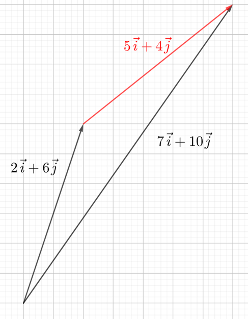
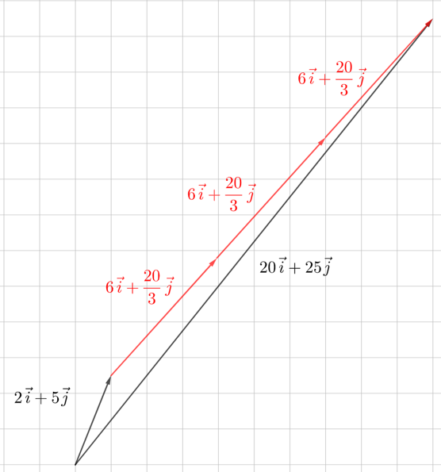
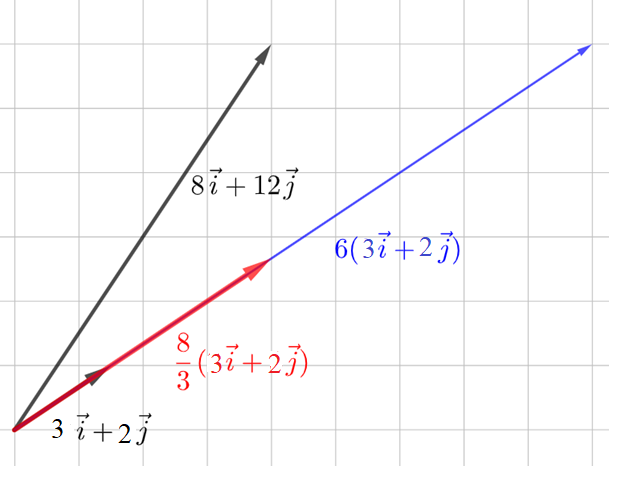
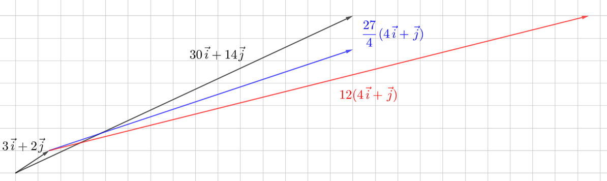
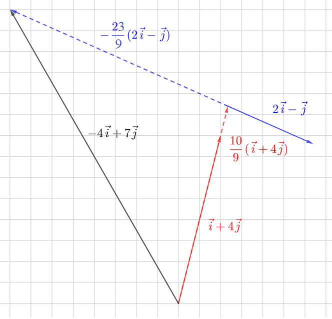

Vektoriyhtälöitä
Contents
Vektoriyhtälöitä#
Aiemmin ollaan opittu ratkomaan monentyyppisiä yhtälöitä, jotka sisältävät lukuja ja tuntemattomia, esimerkiksi \(7+x=16\), \(4x=26\) tai \(3+2x=12\). Vektoriyhtälöt ovat samankaltaisia, mutta lukujen ja tuntemattomien paikalla on vektoreita. Tarkastellaan aluksi esimerkkien avulla, miten vektoriyhtälöitä ratkaistaan ja erityisesti milloin niille on olemassa ratkaisu. Seuraavia esimerkkejä kannattaa aluksi ennen laskemista hahmotella ruutupaperille.
Mahdottomia yhtälöitä?#
Esimerkki
Mikä vektori pitää lisätä vektoriin \(2\vec{i}+6\vec{j}\), että saadaan vektori \(7\vec{i}+10\vec{j}\)?
Ratkaisu
Merkitään tuntematonta vektoria \(x\vec{i}+y\vec{j}\).
Muodostetaan yhtälö: \(2\vec{i}+6\vec{j}+x\vec{i}+y\vec{j}=7\vec{i}+10\vec{j}\)
Yhdistetään samojen kantavektorien kertoimet:
\(\left(2+x\right)\vec{i}+\left(6+y\right)\vec{j}=7\vec{i}+10\vec{j}\)
Verrataan vasenta ja oikeaa puolta:
\(\begin{equation}\begin{cases}2+x=7\\6+y=10 \end{cases}\end{equation}\)
Ratkaistaan yhtälöt yksi kerrallaan:
\(2+x=7\ \Leftrightarrow x=7-2\ \Leftrightarrow x=5\)
\(6+y=10\ \Leftrightarrow y=10-6\ \Leftrightarrow y=4\)
Kysytty vektori on siis \(5\vec{i}+4\vec{j}\)

Yhtälölle löytyi ratkaisu: on siis olemassa jokin vektori, jota pitkin päästään vektorin \(2\vec{i}+6\vec{j}\) määrittämästä paikasta vektorin \(7\vec{i}+10\vec{j}\) määrittämään paikkaan. Ratkaisu oli mahdollinen, koska vaakasuunnassa liikkumiselle oli oma kerroin \(x\) ja pystysuunnassa liikkumiselle oma kerroin \(y\).
Esimerkki
Vektoriin \(2\vec{i}+5\vec{j}\) pitää lisätä 3 kertaa jokin tuntematon vektori, jotta saadaan vektori \(20\vec{i}+25\vec{j}\). Mikä on tämä tuntematon vektori?
Ratkaisu
Merkitään tuntematonta vektoria \(x\vec{i}+y\vec{j}\).
Muodostetaan yhtälö: \(2\vec{i}+5\vec{j}+3(x\vec{i}+y\vec{j})=20\vec{i}+25\vec{j}\)
Sievennetään vasen puoli:
\(2\vec{i}+5\vec{j}+3x\vec{i}+3y\vec{j}=20\vec{i}+25\vec{j}\)
Yhdistetään kantavektorien kertoimet:
\((2+3x)\vec{i}+(5+3y)\vec{j}=20\vec{i}+25\vec{j}\)
Verrataan vasenta ja oikeaa puolta:
\(\begin{equation}\begin{cases}2+3x=20\\5+3y=25\end{cases}\end{equation}\)
Ratkaistaan yhtälöt yksi kerrallaan:
\(2+3x=20\Leftrightarrow x=6\)
\(5+3y=25\ \Leftrightarrow y=\frac{20}{3}\)
Kysytty vektori on siis \(6\vec{i}+\frac{20}{3}\vec{j}\)

Tässäkin tapauksessa ratkaisu löytyi, sillä sekä vaaka- että pystysuuntaiseen siirtymään liittyi oma tuntemattomansa.
Esimerkki
Millä vektori \(3\vec{i}+2\vec{j}\) pitää kertoa, että saadaan vektori \(8\vec{i}+12\vec{j}\)?
Ratkaisu
Merkitään tuntematonta kerrointa \(p\).
Muodostetaan yhtälö: \(p(3\vec{i}+2\vec{j})=8\vec{i}+12\vec{j}\)
Sievennetään vasen puoli:
\(3p\vec{i}+2p\vec{j}=8\vec{i}+12\vec{j}\)
Verrataan vasenta ja oikeaa puolta:
\(\begin{equation}\begin{cases}3p=8\\2p=12\end{cases}\end{equation}\)
Ratkaistaan yhtälöt yksi kerrallaan:
\(3p=8\ \Leftrightarrow p=\frac{8}{3}\)
\(2p=12\ \Leftrightarrow p=6\)
Ei ole sellaista lukua \(p\), että kumpikin yhtälö toteutuisi. Ensimmäisellä ratkaisulla päästään oikeaan suuntaan vaakasuunnassa, mutta pystysuunnassa ollaan väärässä paikassa. Vastaavasti toinen ratkaisu vie oikeaan paikkaan pystysuunnassa, mutta väärään vaakasuunnassa.

Esimerkki
Vektoriin \(3\vec{i}+2\vec{j}\) pitää lisätä \(p\) kertaa vektori \(4\vec{i}+\vec{j}\), jotta saadaan vektori \( 30\vec{i}+14\vec{j} \). Mikä on tämä tuntematon luku \(p\)?
Ratkaisu
Muodostetaan yhtälö: \(3\vec{i}+2\vec{j}+p(4\vec{i}+\vec{j})=30\vec{i}+14\vec{j}\)
Sievennetään vasen puoli:
\(3\vec{i}+2\vec{j} +4p\vec{i}+p\vec{j}=30\vec{i}+14\vec{j}\)
Yhdistetään kantavektorien kertoimet:
\((3+4p)\vec{i}+(2+p)\vec{j}=30\vec{i}+14\vec{j}\)
Verrataan vasenta ja oikeaa puolta:
\(\begin{equation}\begin{cases}3+4p=30\\2+p=14\end{cases}\end{equation}\)
Ratkaistaan yhtälöt yksi kerrallaan:
\(3+4p=30\Leftrightarrow p=\frac{27}{4}\),
\(2+p=14\ \Leftrightarrow p=12\)
Ei ole sellaista lukua \(p\), että kumpikin yhtälö toteutuisi. Kuten edellisessä esimerkissä, kumpikin ratkaisu vie oikeaan paikkaan yhdessä suunnassa, mutta väärään toisessa suunnassa.

Lineaarikombinaatio#
Yleisin tapaus vektoriyhtälöistä on muotoa \(r\vec{a}+s\vec{b}=\vec{c}\). On siis ratkaistava, millä luvuilla \(r\) ja \(s\) vektorit \(\vec{a}\) ja \(\vec{b}\) pitää kertoa, että niistä saadaan yhdistettyä vektori \(\vec{c}\). Yhtälön vasenta puolta kutsutaan vektorien lineaarikombinaatioksi. Kunhan vain vektorit \(\vec{a}\) ja \(\vec{b}\) eivät osoita samaan suuntaan (tai vastakkaisiin suuntiin), niiden lineaarikombinaatiolla voidaan muodostaa mikä tahansa vektori \(\vec{c}\). Tässä oletetaan selkeyden vuoksi, että vektorit ovat tasossa eli sisältävät vain kaksi komponenttia. Kolmiulotteisessa tapauksessa tarvittaisiin yhtälön vasemmalle puolelle vielä kolmas vektori ja sen kerroin.
Vastaava yhtälö luvuilla olisi muotoa \(2x+3y=10\). Yhtälöllä on äärettömän monta ratkaisua, koska tuntemattomia on 2 ja yhtälöitä vain yksi. Vektoreilla tällaisille yhtälöille kuitenkin löytyy yksikäsitteinen ratkaisu, koska vektoriyhtälöön muodostuu oma yhtälö kantavektorille \(\vec{i}\) ja oma yhtälö kantavektorille \(\vec{j}\). Tarkastellaan ratkaisun muodostumista esimerkkien avulla.
Esimerkki
Muodosta vektori \(\vec{c}=-4\vec{i}+7\vec{j}\) käyttämällä vektoreita \(\vec{a}=\vec{i}+4\vec{j}\) ja \(\vec{b}=2\vec{i}-\vec{j}\).
Ratkaisu
Muodostetaan yhtälö \(r\vec{a}+s\vec{b}=\vec{c}\):
\(r\left(\vec{i}+4\vec{j}\right)+s\left(2\vec{i}-\vec{j}\right)=-4\vec{i}+7\vec{j}\)
Sievennetään vasen puoli:
\(r\vec{i}+4r\vec{j}+2s\vec{i}-s\vec{j}=-4\vec{i}+7\vec{j}\)
Yhdistetään vasemmalla kantavektorien kertoimet:
\((r+2s)\vec{i}+(4r-s)\vec{j}=-4\vec{i}+7\vec{j}\)
Kantavektorien kertoimien pitää olla samat kummallakin puolella yhtälöä, joten saadaan yhtälöpari:
\(\begin{equation}\begin{cases} r+2s=4~\text{(yhtälö 1)} \\ 4r-s=7 ~\text{(yhtälö 2)}\end{cases}\end{equation}\)
Yhtälöstä (1) saadaan: \(r=-4-2s~\text{(yhtälö 3)}\)
Sijoitetaan tämä yhtälöön (2):
\(4\left(-4-2s\right)-s=7\)
\(-16-8s-s=7\)
\(-9s=23\)
\(s=-\frac{23}{9}\)
Ratkaistaan \(r\) sijoittamalla äsken ratkaistu \(s\) yhtälöön (3):
\(r=-4-2\cdot\left(-\frac{23}{9}\right)=-4+\frac{46}{9}=\frac{10}{9}\)
Nyt ratkaisu löytyi, koska kumpikin kertoimista \(r\) ja \(s\) esiintyi sekä vaaka- että pystysuuntaista siirtymää kuvaavassa yhtälössä.
Yhtälöpari voidaan ratkaista myös WolramAlphalla: solve r+2s=-4, 4r-s=7. Ratkaisun voi tarkistaakin WolframAlphalla: 10/9*[1,4]+(-23/9)*[2,-1].

Esimerkki
Leija lentää tuulen mukana. Aluksi tuulee \(m\) sekuntia siten, että tuulen suunta ja nopeus määräytyvät vektorista \(25 \vec{i} + 10 \vec{j}\). Sitten tuuli kääntyy vektorin \(-5 \vec{i}+9\vec{j}\) suuntaiseksi. Leija lentää tämän tuulen mukana \(n\) sekuntia. Lopulta leija päätyy paikkaan, jonka sijainnin lähtöpisteestä määrittää vektori \(100 \vec{i}+120 \vec{j}\). Kuinka kauan leijan matka kesti?
Ratkaisu
Muodostetaan yhtälö:
\(m(25 \vec{i} + 10 \vec{j})+n(-5 \vec{i}+9\vec{j})=100 \vec{i}+120 \vec{j}\)
Sievennetään vasen puoli:
\(25m \vec{i} + 10m \vec{j}-5n \vec{i}+9n\vec{j}=100 \vec{i}+120 \vec{j}\)
Yhdistetään samojen kantavektorien kertoimet:
\((25m-5n) \vec{i} + (10m+9n) \vec{j}=100 \vec{i}+120 \vec{j}\)
Ratkaistaan esimerkiksi WolframAlphalla yhtälöpari:
\(\begin{equation}\begin{cases}25m-5n=100\\10m+9n=120\end{cases}\end{equation}\)
Ratkaisuiksi saadaan \(m=\frac{60}{11}\approx 5.45\) s ja \(m=\frac{80}{11}\approx 7.27\) s. Yhteensä siis leijan matka kesti noin 13 sekuntia.
Tuulen suuntia ja nopeuksia ei taideta sääennusteissa ilmoittaa vektoreina. Seuraavassa luvussa otetaan käyttöön vektorien napakoordinaattiesitys. Tällöin esimerkiksi “koillistuulta 8 metriä sekunnissa” voidaan muuttaa vektoriksi.